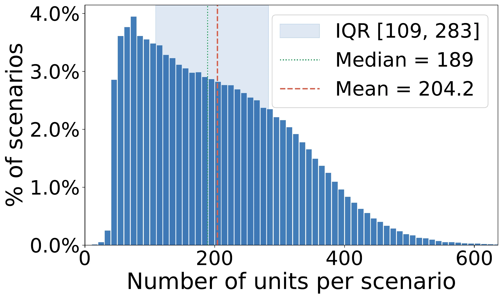
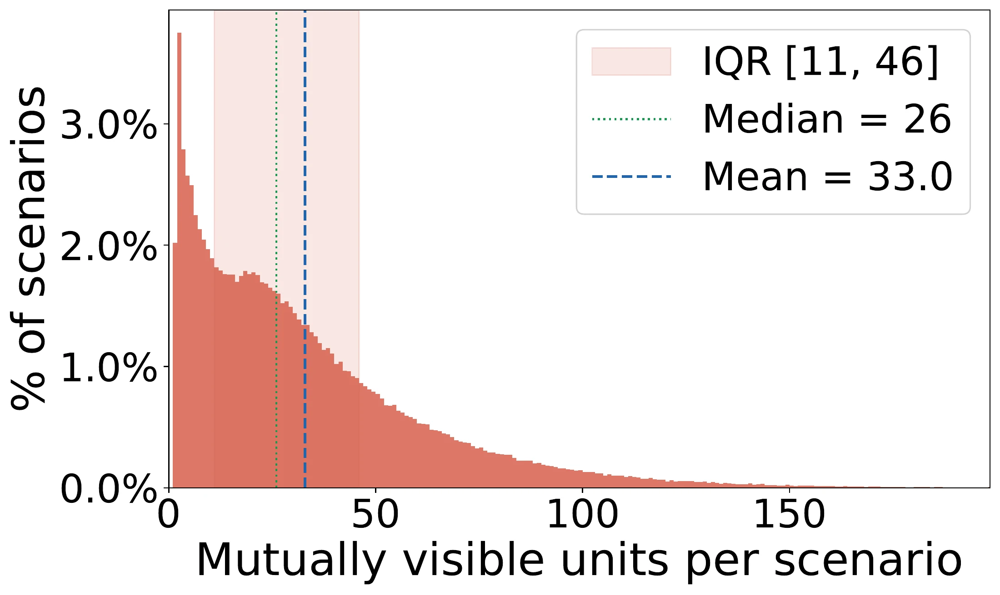
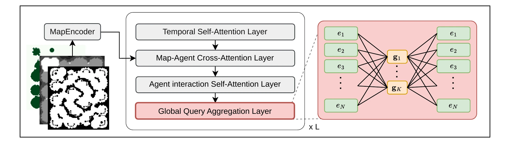
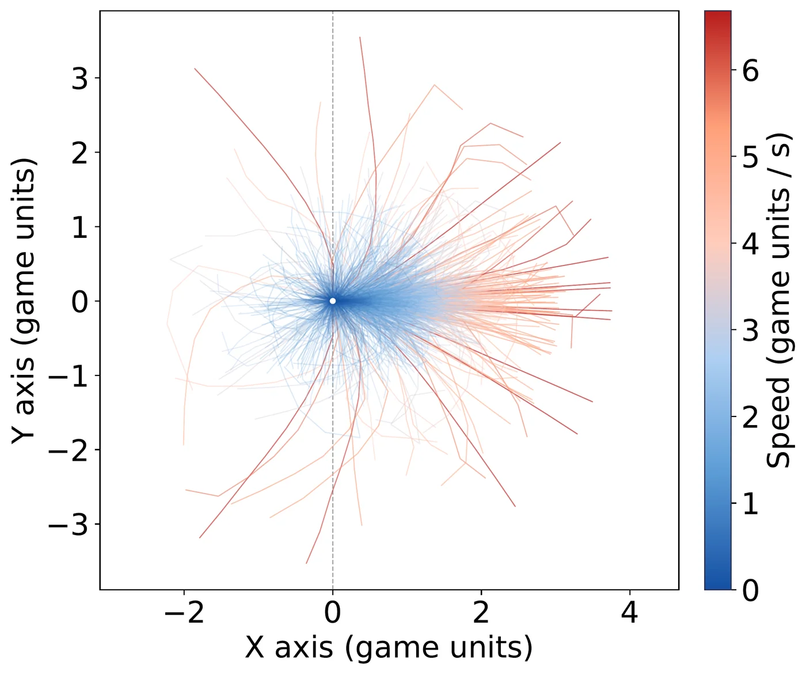
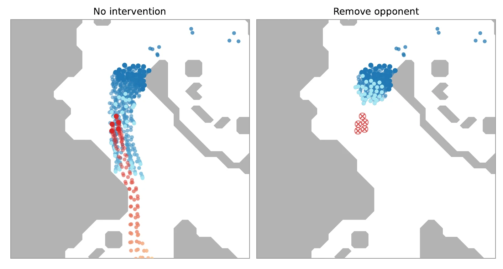
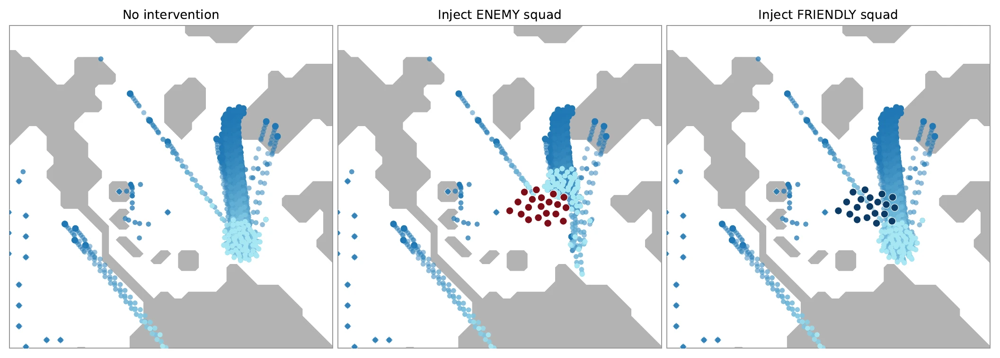

Aligned perspectives
Each replay is processed from an omniscient view and both player views, aligning complete trajectories with player-specific visibility and fog-of-war masks.
STRATEGIC MULTI-AGENT SIMULATION
NeurIPS 2026 · Evaluations & Datasets Track
Human strategies. Competing objectives. Incomplete information.
Agent simulation aims to model the future behavior of interacting agents, but existing benchmarks have largely focused on structured domains such as autonomous driving. Adversarial and partially observable settings remain less explored, despite their importance for modeling strategic multi-agent behavior. To address this gap, we introduce StarCraft Motion, a large-scale dataset for agent simulation built from human StarCraft II replays. Our processing pipeline converts raw replays into standardized simulation scenarios by extracting continuous unit trajectories, deriving command-based unit-level intent labels, and aligning game states with player-specific fog-of-war observations. This enables direct study of behavior, intent, and opponent responses under competitive partial observability. As an initial study, we evaluate autoregressive simulation methods on StarCraft Motion and introduce HMART, a hierarchical baseline that extends SMART with learnable player-level query aggregation for efficient global-context modeling in large-agent-count scenarios. Experiments show that global context improves observer-unit simulation and intent prediction, while closed-loop fine-tuning further improves rollout quality. However, accurately capturing intent initiation and transitions remains difficult. We also find that opponent modeling from partial observations is substantially more challenging, and that additional global information can be misleading when it does not match the opponent's perspective. These results highlight StarCraft Motion as a useful dataset for studying scalable agent simulation in adversarial, partially observable environments.
StarCraft II combines coordinated armies, conflicting goals, and fog of war. StarCraft Motion turns human matches into standardized scenarios for studying how agents move, act, and respond to one another.
Each replay is processed from an omniscient view and both player views, aligning complete trajectories with player-specific visibility and fog-of-war masks.
Continuous unit trajectories are paired with command-derived action labels, target information, map layers, unit attributes, and game context.
Windows emphasize battles, scouting, retreats, and repositioning. Replay-level splits prevent overlap between windows from the same match; held-out maps support OOD evaluation.


01 / OBSERVER-UNIT SIMULATION
Generate future trajectories for the observer's own units from the observer's view. Opponent and neutral trajectories are supplied from logged ground truth.
02 / OPPONENT MODELING
Generate opponent trajectories using the observer's partial information. The observer's own trajectories are supplied from the log; the opponent's hidden intent is unavailable.
These evaluations roll out the selected side under logged context; they do not simulate an entire game with both players acting freely.
Local interactions do not tell the whole story. HMART extends SMART with Global Query Aggregation, letting each unit access scene-level information through a small set of learnable tokens.


A vocabulary of 2,048 motion tokens represents half-second trajectory clips. An autoregressive model samples tokens and feeds the decoded motion back into its context.
An auxiliary intent head predicts actions and targets for observer-owned units. CAT-K fine-tuning addresses covariate shift during closed-loop rollout.
We evaluate 32 sampled rollouts per scenario. The realism meta-score combines kinematic, interaction, and map-alignment scores; minADE measures the best sampled trajectory's displacement error.
| Method | Meta ↑ | Kinematic ↑ | Interactive ↑ | Map ↑ | minADE ↓ |
|---|---|---|---|---|---|
| Constant Velocity | 0.0170 ± 0.0000 | 0.0378 ± 0.0000 | 0.0000 ± 0.0000 | 0.0133 ± 0.0000 | 4.8443 ± 0.0000 |
| Constant Velocity + Gaussian | 0.0190 ± 0.0000 | 0.0378 ± 0.0000 | 0.0000 ± 0.0000 | 0.0191 ± 0.0000 | 4.5272 ± 0.0000 |
| SMART | 0.4677 ± 0.0171 | 0.1551 ± 0.0019 | 0.6022 ± 0.0196 | 0.6459 ± 0.0302 | 0.8460 ± 0.0057 |
| HMART | 0.4690 ± 0.0219 | 0.1552 ± 0.0010 | 0.6077 ± 0.0178 | 0.6442 ± 0.0469 | 0.8439 ± 0.0211 |
| SMART + CAT-K | 0.4802 ± 0.0227 | 0.1599 ± 0.0030 | 0.6189 ± 0.0209 | 0.6618 ± 0.0444 | 0.7967 ± 0.0101 |
| HMART + CAT-K | 0.5000 ± 0.0037 | 0.1628 ± 0.0003 | 0.6357 ± 0.0038 | 0.7014 ± 0.0081 | 0.7731 ± 0.0119 |
HMART + CAT-K achieves the strongest results across all five metrics. Before CAT-K fine-tuning, SMART and HMART have similar closed-loop performance.
| Method | Meta ↑ | Kinematic ↑ | Interactive ↑ | Map ↑ | minADE ↓ |
|---|---|---|---|---|---|
| Constant Velocity | 0.0175 ± 0.0000 | 0.0432 ± 0.0000 | 0.0000 ± 0.0000 | 0.0092 ± 0.0000 | 5.6727 ± 0.0000 |
| Constant Velocity + Gaussian | 0.0215 ± 0.0000 | 0.0459 ± 0.0000 | 0.0000 ± 0.0000 | 0.0187 ± 0.0000 | 5.2354 ± 0.0000 |
| SMART | 0.2344 ± 0.0033 | 0.1162 ± 0.0003 | 0.3298 ± 0.0036 | 0.2572 ± 0.0062 | 2.4441 ± 0.0265 |
| HMART | 0.2392 ± 0.0076 | 0.1167 ± 0.0005 | 0.3521 ± 0.0089 | 0.2486 ± 0.0137 | 2.4804 ± 0.0430 |
| SMART + CAT-K | 0.2726 ± 0.0045 | 0.1125 ± 0.0006 | 0.3803 ± 0.0057 | 0.3250 ± 0.0072 | 2.1966 ± 0.0306 |
| HMART + CAT-K | 0.2577 ± 0.0090 | 0.1145 ± 0.0007 | 0.3865 ± 0.0115 | 0.2721 ± 0.0154 | 2.3168 ± 0.0505 |
More context is not always better. SMART + CAT-K leads on meta-score, map alignment, and minADE. Global information from the observer's view may not match what the opponent knows, suggesting a need for perspective-aligned representations.
Values and ± terms are reported as in the paper. Bold marks the best mean per metric within each task.
HMART reaches 0.847 average intent precision versus SMART's 0.811. CAT-K raises HMART's average recall from 0.393 to 0.405, while precision falls to 0.689—better rollout realism does not guarantee better intent prediction.
The simulator can also roll out modified scenarios. Removing a pursued opponent or inserting a squad changes the generated response.


These are qualitative interventions, not measured counterfactual accuracy: the corresponding alternative outcomes are not observed in the replay data.
If you find our work useful, please consider citing:
@inproceedings{chen2026starcraftmotion,
title = {{StarCraft Motion}: A Dataset for Agent Simulation in Adversarial and Partially Observable Scenarios},
author = {Yi-Chung Chen and Mingyu Kim and Ruqi Bai and James Zachary Hare and Jing Gao and David I. Inouye},
booktitle = {Advances in Neural Information Processing Systems},
year = {2026},
url = {https://inouye-lab.github.io/StarCraftMotion/}
}